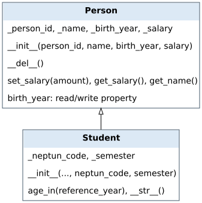
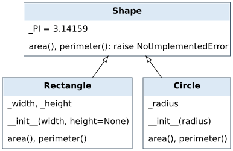
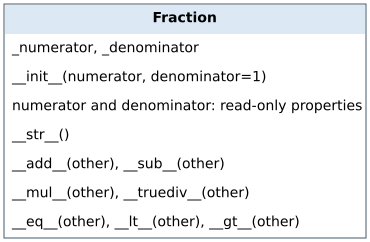

Week 10 – Class Exercises: Object-Oriented Programming
Six in-class exercises · 150 minutes of coding
Use explicit loops and conditions. Do not use imports, break, continue, comprehensions, lambda, map/filter or built-in algorithm shortcuts (such as sum, min, max, sorted or math.gcd). Use CapWords class names, snake_case methods and parameters, self for instance methods, and _leading_underscore for non-public state. Use the public methods and properties when working with an object from outside its class. Inside a class, its own implementation may use its backing fields; use the public interface for other objects. Use super() to initialize inherited state. Each solution must be self-contained: copy the previous class into the current exercise where requested.
Exercises 2, 3 and 6 build on earlier work. Paste the earlier class into the new editor when requested. Run displays output. Check solution tests behavior with additional objects. Naming and encapsulation also need manual review. Code is saved in this browser while you work. Evaluate my work uploads your Neptun code, solutions and activity metrics to Azure. AI feedback is optional and is not an official grade.
- Jupyter Notebook — download for Jupyter or JupyterLab
- Google Colab — open, then choose File → Save a copy in Drive · Download Colab notebook
Timing counts focused time with the most recently opened exercise expanded.
- Define the class. Create
Personwith__init__(self, person_id, name, birth_year, salary). - Store the data. Use
_person_id,_name,_birth_yearand_salary. - Add a finalizer. Define
__del__to print a farewell, e.g.Goodbye, Joe White. - Create an instance. Write
p = Person(2023, "Joe White", 1995, 5600).
Optional demonstration: Try del p. The timing of finalization is not graded.
Class diagram

Active time: 00:00 Paused
- Start from Exercise 1. Copy your
Personclass. - Add public methods. Implement
get_name(),get_salary()andset_salary(amount). Reject negative salaries withValueError. - Add a property. Use
@propertyand@birth_year.setterforbirth_year. Reject values other than positive integers withValueError. - Initialize and demonstrate. Apply the same validation in
__init__. Demonstrate the public methods and property.
Class diagram
Active time: 00:00 Paused
- Start from Exercise 2. Copy your
Personclass and defineStudent(Person). - Initialize the student. Use parameters
person_id,name,birth_year,salary,neptun_codeandsemester. Callsuper().__init__and use leading underscores for the two new fields. - Add behavior. Return
reference_year - birth_yearfromage_in(reference_year). Return text in the formName (Neptun: CODE, semester: N)from__str__. - Test. Create one student and use its public interface.
Class diagram
Active time: 00:00 Paused
- Define the base class. In
Shape, set_PI = 3.14159. Definearea()andperimeter()to raiseNotImplementedError. - Define the subclasses. Implement
Rectangle(width, height=None)andCircle(radius)with non-public dimensions. Assume positive dimensions. If height is omitted, make a square. - Override both methods. Implement area and perimeter for each subclass. Use the inherited constant in circle calculations.
- Test. Create a rectangle, a square and a circle. Call their public methods.
Class diagram

Active time: 00:00 Paused
- Initialize and normalize. Define
Fraction(numerator, denominator=1)with integer inputs and non-public fields. Reject a zero denominator withValueError. Reduce using a loop-based GCD and keep the denominator positive. - Expose and display values. Provide read-only
numeratoranddenominatorproperties. Returnnumerator/denominatorfrom__str__, even when the denominator is 1. - Implement arithmetic. Support
+,-,*and/between fractions. Return new instances and leave the operands unchanged. - Handle exceptional cases. Raise
ZeroDivisionErrorwhen dividing by a fraction whose numerator is zero. ReturnNotImplementedfor unsupported operand types. - Test the operators. For
1/2and3/4, expect5/4,-1/4,3/8and2/3, respectively. Check thatFraction(4) - Fraction(1, 2)gives7/2.
Class diagram

Active time: 00:00 Paused
- Start from Exercise 5. Copy your
Fractionclass. - Add comparisons. Implement
__eq__,__lt__and__gt__. Use exact cross multiplication without converting tofloat. - Handle unsupported types. Return
NotImplementedfor unsupported operands. - Test. Try equivalent fractions, different fractions and negative values. This is an in-class exercise.
Class diagram
Active time: 00:00 Paused